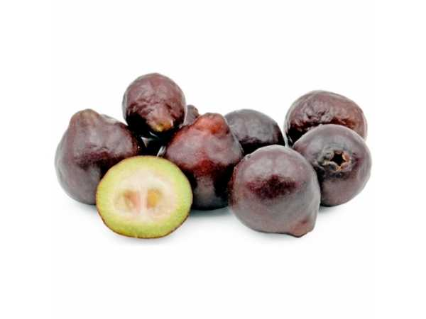

Psidium cattleianum (purple variety)
Common Names: Purple Cattley Guava, Strawberry Guava, Cherry Guava, Purple Forest Guava
Local Name: Araçá-roxo (Portuguese)
Family: Myrtaceae
Origin: Coastal Brazil (Atlantic Forest region)
Plant Type: Perennial evergreen shrub to small tree
Variety: Purple variety — dark red-purple fruit with sweet strawberry-guava flavour
Average Lifespan: 25–40 years
| Growth Habit | Dense, multi-stemmed evergreen shrub or small tree; attractive smooth bark |
| Plant Size | 2–6 meters tall; spread 2–4 meters |
| Leaves | Opposite, elliptic, 5–10 cm long, thick glossy dark green; smooth and leathery |
| Flowers | White, 4-petaled, 2–2.5 cm across with numerous prominent stamens; solitary in leaf axils |
| Flower Characteristics | Fragrant; attract bees; bloom in spring to early summer |
| Fruit | Round berry, 2–4 cm diameter; thin skin, soft juicy flesh with sweet strawberry-guava flavour; edible skin |
| Fruit Color | Green turning dark red to deep purple when ripe |
| Seed Characteristics | Numerous small hard seeds embedded in flesh; edible |
| Root System | Fibrous, moderately deep; can sucker from roots |
| Climate | Tropical to warm temperate; more cold-tolerant than common guava |
| Temperature Range | 15–30°C ideal; tolerates brief frost to −5°C (mature plants) |
| Rainfall Requirement | 800–2500 mm annually; adaptable |
| Soil Type | Adaptable; grows in sandy, loamy, or clay soils; tolerates poor soils |
| Soil pH Preference | 5.0–7.0 |
| Sun Requirement | Full sun to partial shade |
| Spacing | 3–5 meters between plants |
| Irrigation Method | Moderate watering; drip irrigation during dry periods |
| Water Requirement | Low to moderate; drought-tolerant once established |
| Can it Grow in Pots? | Yes, excellent container plant (20–30 liters); compact growth suits pots |
| Fertilizer Schedule | 2–3 times per year; spring, summer, early autumn |
| Recommended Organic Fertilizers | Compost, vermicompost, fish emulsion, seaweed extract |
| Pesticide Frequency | Rarely needed; naturally pest-resistant |
| Recommended Organic Pesticides | Neem oil for occasional scale; fruit fly traps during fruiting |
| Mulching Practice | Organic mulch to retain moisture and suppress weeds |
| Training System | Natural multi-stemmed form or trained as single-trunk small tree |
| Pruning Time | After fruiting; remove suckers regularly |
| How to Prune | Remove root suckers to control spread; thin interior for airflow; tip-prune for shape |
| Common Pests | Fruit fly, birds, occasional scale insects |
| Common Diseases | Generally disease-resistant; occasional anthracnose in humid conditions |
| Disease Prevention & Remedies | Good air circulation; remove fallen fruit; minimal intervention needed |
| Flowering Months | Spring to early summer |
| Fruiting Season | Summer to autumn; 3–5 months after flowering |
| Days to Harvest | 90–150 days from flowering |
| Harvest Indicators | Fruit turns deep purple; softens; sweet strawberry aroma; falls when ripe |
| Average Yield per Plant | 5–20 kg per plant per year (mature); prolific bearer |
| Pollination Type | Self-fertile; insect-pollinated |
| Pollination Notes | Bees are primary pollinators; self-fertile — single plant produces fruit |
| Pollination Details | Self-fertile; bees attracted to fragrant white flowers |
| Propagation by Seeds | Seeds germinate in 4–8 weeks; seedlings fruit in 3–5 years; fairly true-to-type |
| Propagation by Cuttings | Semi-hardwood cuttings with rooting hormone; moderate success |
| Propagation by Grafting | Can be grafted on Psidium rootstock; root suckers also used for propagation |
| Water Usage | Low to moderate; drought-tolerant once established |
| Soil Conservation Practices | Dense root system holds soil; good for slope stabilization |
| Organic Practices Used | Low-input species; minimal chemical requirements |
| Companion Plants | Other Myrtaceae, tropical fruit trees, ground covers |
| Biodiversity Benefits | Fruit attracts birds and wildlife; flowers support pollinators; note: can be invasive in some regions |
| Commercial Production Regions | Brazil, Hawaii, Florida, tropical Asia; widely naturalized in tropics |
| Market Uses | Fresh fruit, ornamental plant, hedge |
| Processing Uses | Jams, jellies, juice, ice cream, smoothies, wine |
| Market Value (Approx.) | ₹100–300 per kg (specialty fruit market) |
| Symbolism | Named after English horticulturist William Cattley; beloved street fruit in tropical regions |
| Traditional Uses | Fruit eaten fresh; leaf tea used in Brazilian folk medicine for diarrhoea; bark used as astringent |
| Calories | 69 kcal per 100g |
| Dietary Fiber | 5.4 g per 100g |
| Vitamin C | 37 mg per 100g |
| Vitamin A | Present (anthocyanin pigments in purple variety) |
| Iron | 0.2 mg per 100g |
| Potassium | 292 mg per 100g |
| Antioxidants | Anthocyanins (purple variety), phenolic compounds, carotenoids, flavonoids |
| Other Key Nutrients | Calcium, phosphorus, niacin, thiamine |
| Anxiety & Sleep | Not a primary medicinal use |
| Immune Support | Vitamin C and antioxidants support immune function |
| Anti-inflammatory Properties | Leaf extracts show anti-inflammatory and antimicrobial activity |
| Heart Health | Potassium and fiber support cardiovascular health |
| Digestive Health | High fiber content aids digestion; leaf tea used for diarrhoea in folk medicine |
Disclaimer: Information provided is for educational purposes only and not a substitute for medical advice.
Add your field observations here.